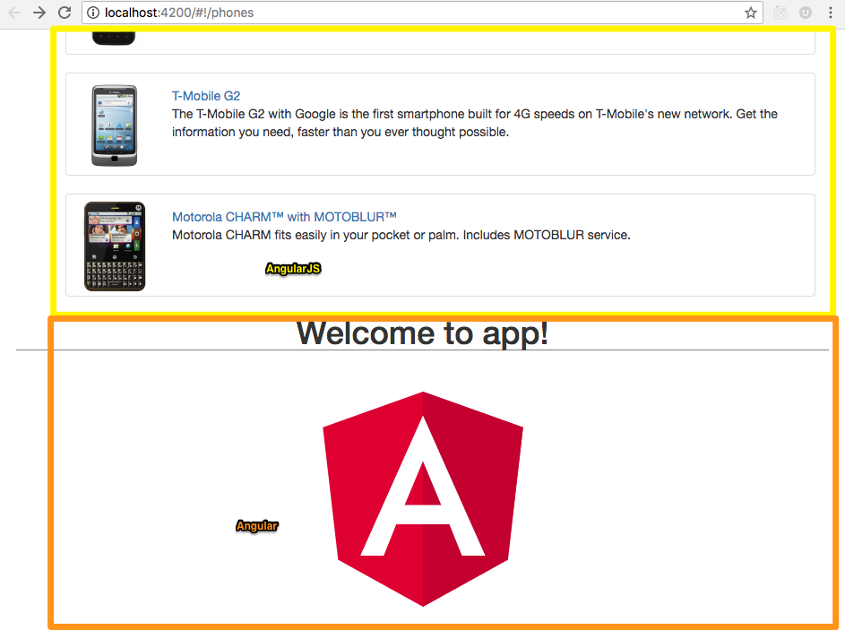
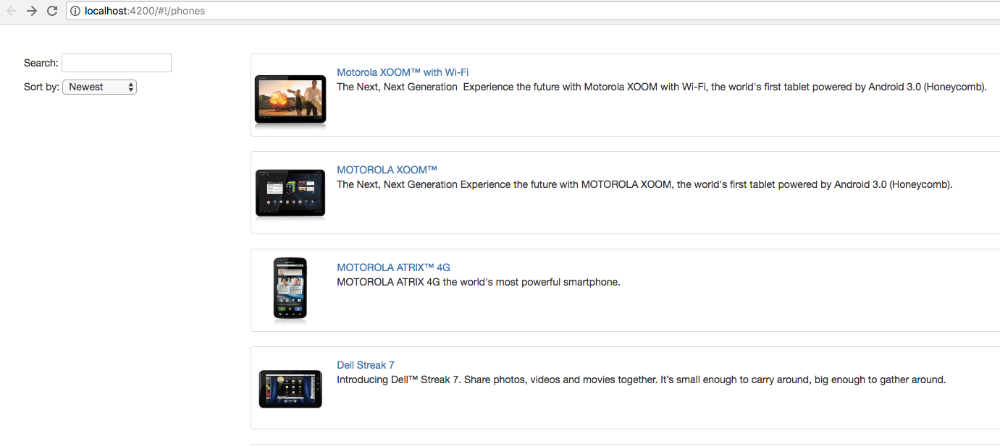
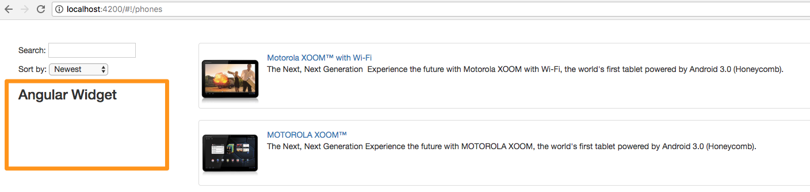
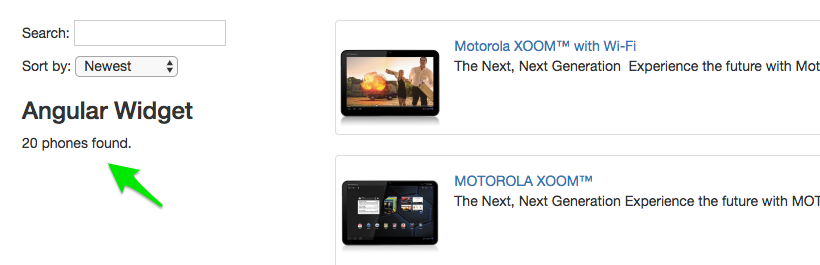
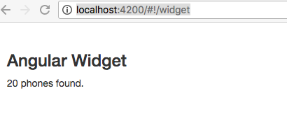
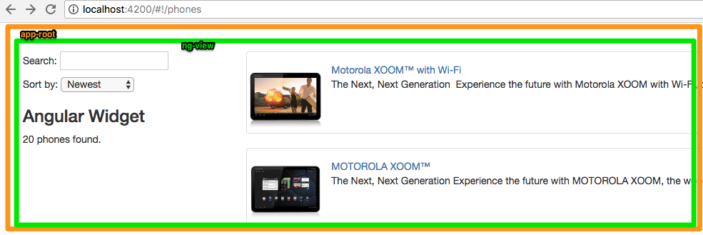
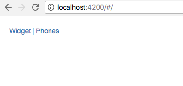
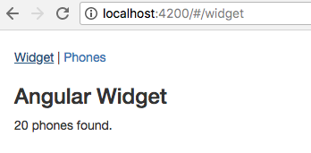
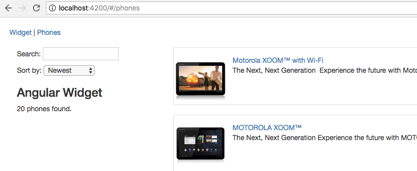

This tutorial walks you through upgrading the Phonecat app written in AngularJS to Angular using the Angular CLI.
This project was generated with Angular CLI version 1.7.4 using the following steps.
ng new upgrading
cd upgrading
Note that you will not need to do these steps for the tutorial as the project has already been created. Instead:
Open a command-prompt or terminal to the upgrading folder.
Checkout the branch step-1-new-angular-project
git checkout step-1-new-angular-project -f
git clean -fd
git branch working
git checkout working
npm install
npm start -- -o
A browser should open and show the message:
Welcome to app!
Using the existing directory has the following advantages
angular-cli does not need to be installed globally.diff our working branch code with the completed code for each step in the process.To see the available branches.
git branch
In src folder create two folders angular and angularjs.
Move everything inside src except the angular and angularjs folders created in the prior step into the angular folder.
Copy these four files from src\angular\app back out into src.
bower_components folder in angular-phonecat\app.If you download your own copy of angular-phonecat you would need to first run npm install which creates this folder.
angular-phonecat\app into upgrading\src\angularjs.upgrading\src\angularjs\index.html into upgrading\src\index.html as shown below: <!doctype html>
<html lang="en">
<head>
<meta charset="utf-8">
<title>Upgrading</title>
<base href="/">
<meta name="viewport" content="width=device-width, initial-scale=1">
<link rel="icon" type="image/x-icon" href="favicon.ico">
+ <link rel="stylesheet" href="angularjs/bower_components/bootstrap/dist/css/bootstrap.css" />
+ <link rel="stylesheet" href="angularjs/app.css" />
+ <link rel="stylesheet" href="angularjs/app.animations.css" />
+
+ <script src="angularjs/bower_components/jquery/dist/jquery.js"></script>
+ <script src="angularjs/bower_components/angular/angular.js"></script>
+ <script src="angularjs/bower_components/angular-animate/angular-animate.js"></script>
+ <script src="angularjs/bower_components/angular-resource/angular-resource.js"></script>
+ <script src="angularjs/bower_components/angular-route/angular-route.js"></script>
+ <script src="angularjs/app.module.js"></script>
+ <script src="angularjs/app.config.js"></script>
+ <script src="angularjs/app.animations.js"></script>
+ <script src="angularjs/core/core.module.js"></script>
+ <script src="angularjs/core/checkmark/checkmark.filter.js"></script>
+ <script src="angularjs/core/phone/phone.module.js"></script>
+ <script src="angularjs/core/phone/phone.service.js"></script>
+ <script src="angularjs/phone-list/phone-list.module.js"></script>
+ <script src="angularjs/phone-list/phone-list.component.js"></script>
+ <script src="angularjs/phone-detail/phone-detail.module.js"></script>
+ <script src="angularjs/phone-detail/phone-detail.component.js"></script>
</head>
-<body>
+<body ng-app="phonecatApp">
+ <div class="view-container">
+ <div ng-view class="view-frame"></div>
+ </div>
<app-root></app-root>
</body>
</html>
When finished with the merge delete upgrading\src\angularjs\index.html.
.angular-cli.json to recognize the new directory structure. {
"root": "src",
"outDir": "dist",
- "assets": [
- "assets",
- "favicon.ico"
- ],
+ "assets": ["angularjs", "assets", "favicon.ico"],
"index": "index.html",
- "main": "main.ts",
- "polyfills": "polyfills.ts",
- "test": "test.ts",
+ "main": "angular/main.ts",
+ "polyfills": "angular/polyfills.ts",
+ "test": "angular/test.ts",
"tsconfig": "tsconfig.app.json",
"testTsconfig": "tsconfig.spec.json",
"prefix": "app",
- "styles": [
- "styles.css"
- ],
+ "styles": ["angular/styles.css"],
"scripts": [],
"environmentSource": "environments/environment.ts",
"environments": {
- "dev": "environments/environment.ts",
- "prod": "environments/environment.prod.ts"
+ "dev": "angular/environments/environment.ts",
+ "prod": "angular/environments/environment.prod.ts"
}
}
],
angularjs/ to the paths in these files in the src\angularjs directory.core\phone\phone.service.js
"phones/:phoneId.json","angularjs/phones/:phoneId.json",phone-list\phone-list.component.js
templateUrl: "phone-list/phone-list.template.html",templateUrl: "angularjs/phone-list/phone-list.template.html",phone-list\phone-list.template.html
<img ng-src="{{phone.imageUrl}}" alt="{{phone.name}}" /><img ng-src="angularjs/{{phone.imageUrl}}" alt="{{phone.name}}" />phone-detail\phone-detail.component.js
templateUrl: "phone-detail/phone-detail.template.html",templateUrl: "angularjs/phone-detail/phone-detail.template.html",phone-detail.template.html
{{img}}angularjs/{{img}}
Note there are two instances of {{img}} in the template on line 2 and 12.npm start -- -o
You should see both the Angular and AngularJS application rendered when the page loads as shown below.

As those two applications are bootstrapped separately, they are not able to communicate with each other or to exchange services and components. To make this work, we have to bootstrap them together as a hybrid application. The next section show how to do this.
ngUpgrade which is part of Angular:Open another command-prompt or terminal to the upgrading directory and run this command.
npm install @angular/upgrade@5.2.0 --save
index.htmlWe don't want to bootstrap the Angular application on its own at this point, so we will comment out it's root component in src\index.html.
<!-- <app-root></app-root> -->
angular\app\app.module.ts comment out the bootstrap of the AppComponent// bootstrap: [AppComponent]
ng-app directive.UpgradeModule to the list of Angular module imports.angular\app\app.module.ts
+ import { UpgradeModule } from "@angular/upgrade/static";
@NgModule({
declarations: [AppComponent],
imports: [BrowserModule,
+ UpgradeModule],
providers: []
// bootstrap: [AppComponent]
})
...and bootstrap the hybrid application in the AppModule class.
...
export class AppModule {
constructor(private upgrade: UpgradeModule) {}
ngDoBootstrap() {
this.upgrade.bootstrap(document.body, ["phonecatApp"], { strictDi: true });
}
}
The Angular application needs to be restarted to recognize the UpgradeModule and bootstrap itself appropriately.
Use Ctrl+C (Windows) or Cmd+C (Mac) to stop the web server.
Run the application.
npm start -- -o
You should see just AngularJS application rendered when the page loads as shown below.

Create file src\angular\app\widget\widget.componentfini.ts. Note that you will need to create the widget directory.
Add this code to create an Angular component
import { Component } from "@angular/core";
@Component({
selector: "app-widget",
template: `
<h3>Angular Widget</h3>
`
})
export class WidgetComponent {}
src\app\angular\app.module.ts, downgrade the Angular WidgetComponent to an AngularJS componentimport { UpgradeModule, downgradeComponent } from "@angular/upgrade/static";
import { WidgetComponent } from "./widget/widget.component";
declare var angular: any;
angular
.module("phonecatApp")
.directive("appWidget", downgradeComponent({ component: WidgetComponent }));
Be sure to use camel-case the appWidget when registering the directive name above. This translates to the _dasherized syntax: <app-widget></app-widget in the template._
...and add the WidgetComponent to the AppModule declarations and as an entry component.
@NgModule({
declarations: [AppComponent,
+ WidgetComponent],
imports: [BrowserModule, UpgradeModule],
+ entryComponents: [WidgetComponent],
providers: []
// bootstrap: [AppComponent]
})
export class AppModule {
...
As you see in this sample, the downgraded component is registered as a directive within the AngularJS module. For this, we can leverage the global angular variable. In order to tell TypeScript about this preexisting variable, we have to use the declare keyword.
src/angularjs/phone-list/phone-list.template.html
...
</select>
</p>
<p>
<!-- Angular Component -->
<app-widget></app-widget>
</p>

In order to use an existing AngularJS service within a new Angular Component, we have to upgrade it.
phone.service.ts. Create the file at the path shown below and add the code to the new file.src\angular\app\phones\shared\phone.service.ts
import { InjectionToken } from "@angular/core";
export const PHONE_SERVICE = new InjectionToken<any>("PHONE_SERVICE");
function createPhoneService(injector) {
return injector.get("Phone");
}
export const phoneServiceProvider = {
provide: PHONE_SERVICE,
useFactory: createPhoneService,
deps: ["$injector"]
};
Normally, we could use the service's type as the dependency injection token defined by the provide property. But in this case we explicitly decided to not upgrade the existing AngularJS 1.x code to TypeScript and so we don't have any type for it. Because of this, this sample uses a constant based Token called PHONE_SERVICE. For such tokens Angular 4+ provides the type InjectionToken. In Angular 2 we would use OpaqueToken instead. The InjectionToken takes a type parameter which identifies the type of the service it is pointing to. As mentioned, we don't have a type for this service and so we are just going with any. Note: the injector is getting the phone from src\angularjs\core\phone\phone.service.js.
2.Register the service provider with the Angular module.
src\angular\app\app.module.ts
[...]
import { phoneServiceProvider } from "ng2/app/phone.service";
[...]
@NgModule({
[...],
providers: [
phoneServiceProvider
]
})
export class AppModule {
[...]
}
phoneService into the Angular WidgetComponent and show a count of the phones.src\angular\app\widget\widget.component.ts
import { Component, Inject, OnInit } from "@angular/core";
import { PHONE_SERVICE } from "../phones/shared/phone.service";
@Component({
selector: "app-widget",
template: `
<h3>Angular Widget</h3>
<p>
{{phones.length}} phones found.
</p>
`
})
export class WidgetComponent implements OnInit {
phones: any[] = [];
constructor(@Inject(PHONE_SERVICE) private phoneService: any) {}
ngOnInit(): void {
this.phones = this.phoneService.query();
}
}
Run the application and you should see a count of phones in the Angular Widget as shown below.

We now have an AngularJS component with an Angular Component that is displaying data from an AngularJS service.
Instead of nesting AngularJS and Angular stuff, we also need the possibility to activate routes from both versions. We will explore this in the next couple sections.
Making the AngularJS Router activate Angular components is quite easy.
src\angularjs\app.config.js
angular.module("phonecatApp").config([
"$locationProvider",
"$routeProvider",
function config($locationProvider, $routeProvider) {
$locationProvider.hashPrefix("!");
$routeProvider
.when("/phones", {
template: "<phone-list></phone-list>"
})
.when("/phones/:phoneId", {
template: "<phone-detail></phone-detail>"
})
+ .when("/widget", {
+ template: "<app-widget></app-widget>"
+ })
.otherwise("/phones");
}
]);

While this solution is very easy, it also comes with a drawback. We cannot leverage the new Angular Router for the newly written components. We will explore how we can use the Angular Router in the next sections.
AppComponent) and remove the ng-view directive.<body>
- <div class="view-container">
- <div ng-view class="view-frame"></div>
- </div>
+ <app-root></app-root>
</body>
src\app.component.htmlng-view directive as shown below<div class="view-container">
<div ng-view class="view-frame"></div>
</div>
AppComponent in AppModule@NgModule({
declarations: [AppComponent, WidgetComponent],
imports: [BrowserModule, UpgradeModule],
entryComponents: [WidgetComponent],
providers: [phoneServiceProvider],
+ bootstrap: [AppComponent]
})
export class AppModule {}
upgradeModuleexport class AppModule {
- constructor(private upgrade: UpgradeModule) {}
- ngDoBootstrap() {
- this.upgrade.bootstrap(document.body, ["phonecatApp"], { strictDi: true -});
- }
}
ngOnInit lifecycle hook of the AppComponent to manually bootstrap the application.export class AppComponent implements OnInit {
constructor(private upgrade: UpgradeModule) {}
ngOnInit(): void {
this.upgrade.bootstrap(document.body, ["phonecatApp"]);
}
}
Be sure you are implementing the component lifecycle hook ngOnInit and NOT ngDoBoostrap as we did in the module.

router-outletsrc/angular/app/app.component.html
<div class="view-container">
<div ng-view class="view-frame"></div>
+ <router-outlet></router-outlet>
</div>
You can ignore the error message 'router-outlet' is not a known element. It will be gone after we complete the next few steps.
src\angular\app\app.module.ts
+ import { WidgetComponent } from "./widget/widget.component";
+ import { RouterModule } from "@angular/router";
angular.module('phonecatApp')
.directive(
'ng2Demo',angular.module('phonecatApp')
],
imports: [
BrowserModule,
UpgradeModule,
+ RouterModule.forRoot([
+ {
+ path: "widget",
+ component: WidgetComponent
+ }
+ ],
+ {
+ useHash: true
+ }
+ )
],
entryComponents: [
Ng2DemoComponent // Don't forget this!!!
],
providers: [
phoneServiceProvider
],
bootstrap: [AppComponent]
})
src\angular\app\app.module.ts
...
import { RouterModule, UrlHandlingStrategy } from "@angular/router";
class CustomUrlHandlingStrategy implements UrlHandlingStrategy {
shouldProcessUrl(url) {
return url.toString().startsWith("/widget") || url.toString() === "/";
}
extract(url) {
return url;
}
merge(url, whole) {
return url;
}
}
CustomUrlHandlingStrategy.src\angular\app\app.module.ts
...
entryComponents: [
Ng2DemoComponent // Don't forget this!!!
],
providers: [
phoneServiceProvider,
+ { provide: UrlHandlingStrategy, useClass: CustomUrlHandlingStrategy }
],
...
src\angularjs\app.config.js
angular.module("phonecatApp").config([
"$locationProvider",
"$routeProvider",
function config($locationProvider, $routeProvider) {
//$locationProvider.hashPrefix("!");
$routeProvider
.when("/phones", {
template: "<phone-list></phone-list>"
})
.when("/phones/:phoneId", {
template: "<phone-detail></phone-detail>"
})
// .when("/widget", {
// template: "<app-widget></app-widget>"
// })
//.otherwise("/phones");
.otherwise({ template: "" });
}
]);
AppComponent template at the top of the page that allows you to switch between AngularJS and Angular routes.src\angular\app\app.component.html
<a routerLink="widget">Widget</a> |
<a href="#/phones">Phones</a>
  